Apple 在 10 月 30 日发布了全新的 iPad Pro 11 寸版本和 12.9 寸版本，它们去除了 Home 键、配备了 Face ID，从而使得边框变得极窄，iPad Pro 也步入了无 Home 键的时代。但与之前发布的 iPhone Xs、iPhone Xs Max 不同，全新的 iPad Pro 并没有刘海。同时，Apple 发布了第二代 Apple Pencil，在这支笔上配备了双击手势功能。那在设计与开发适配全新的具备 Split View、Slide Over 功能、搭配第二代 Apple Pencil 的 iPad Pro 时，有什么要注意的呢？
全新 iPad Pro 亮相：
- Note:
在进一步阅读此文章前，推荐阅读这篇文章的姊妹篇，有利于更好地理解 Apple 最新 iPhone、iPad 的适配原则：
目录
屏幕尺寸的变化
全新的 iPad Pro 11″ 与 iPad Pro 10.5″ 相比，在去除了 Home 键之后，将上下边框（竖屏模式下）缩小，而机身尺寸几乎变化不大，故屏幕由原来的 10.5 寸增大为 11 寸。因此 iPad Pro 11″ 在横屏模式下的屏幕高度与 iPad Pro 10.5″ 是相同的，但在横屏模式下的屏幕宽度比 iPad Pro 10.5″ 多出了 82pt @2x，即横屏模式下 iPad Pro 11″ 为 1194 × 834pt @2x，iPad Pro 10.5″ 为 1112 × 834pt @2x。
全新的 iPad Pro 12.9″ 与第二代 iPad Pro 12.9″ 相比，在去除了 Home 键并缩小了上下边框（竖屏模式下）后，整体机身尺寸变小一圈，使得屏幕仍保持 12.9 寸不变。因此第三代 iPad Pro 12.9″ 和前两代的 iPad Pro 12.9″ 的屏幕显示宽度、高度完全一致，即横屏模式下 1366 × 1024pt @2x。
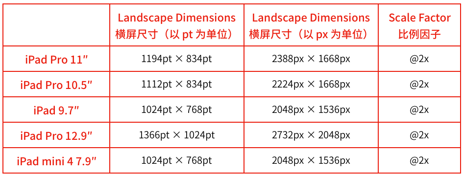
- 有人可能会产生疑惑：同是新一代的 iPad Pro，为什么 11 寸的和 12.9 寸的相比上一代的变化方式不同？一个增大屏幕、保持机身尺寸几乎不变；一个保持屏幕尺寸不变、减小机身尺寸。如果新的小尺寸的 iPad Pro 仍然保持 10.5 寸屏幕、减小机身尺寸，iPad 分辨率的变种不就更少、适配不就更简单？一个个人感觉靠谱的说法：iPad Pro 的定位是注重生产力的个人电脑，Smart Keyboard 是其重要的一个配件，不可或缺，如果机身尺寸在上一代的基础上进一步缩小，那就会导致全尺寸的 Smart Keyboard 的按键设计出现问题。所以基于此，Apple 不会再减小 iPad Pro 的机身尺寸，自然只能扩大屏幕尺寸。
App 的适配与设计原则
全新的 iPad Pro 的屏幕与 iPhone Xs 一样是四个圆角，所以在设计 app 时，应该避免重要的信息或控件出现在四个角落，以免被圆角遮挡或切割。像 Status Bar、Navigation Bar、Tab Bar、Tool Bar 这些会覆盖到边角的标准控件，应该被自动且正确地放置。
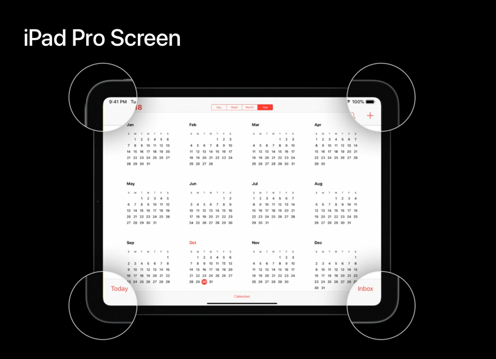
为了让你的 app 在全新的 iPad Pro 上完美地呈现，你需要在设计 app 时遵守下面三个原则：
使用安全区域布局规范（Safe Area Layout Guides）阻止界面元素被屏幕圆角切割或者被 Home Indicator 遮挡。
在屏幕上没有其他控件时，安全区域几乎覆盖整个屏幕，在横屏和竖屏模式下，需要在底部留出 20pt 高度的区域给 Home Indicator，以防内容被 Home Indicator 遮挡。
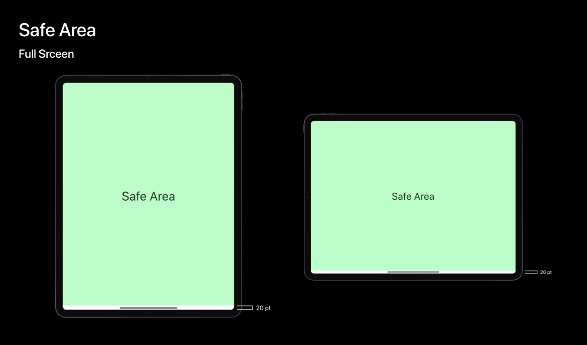
不要尝试在 Home Indicator 周围放置控件、元素，虽然在全屏模式下，Home Indicator 是位于屏幕底部中央位置的，但在 Split View 中，Home Indicator 的位置会跟随 app 发生变化。如果有内容放置在 Home Indicator 两边就可能会被遮挡。
当界面中显示 Status Bar 时，Status Bar 的高度是 24pt，而不是 iPhone 或者前几代 iPad 上的 20pt。
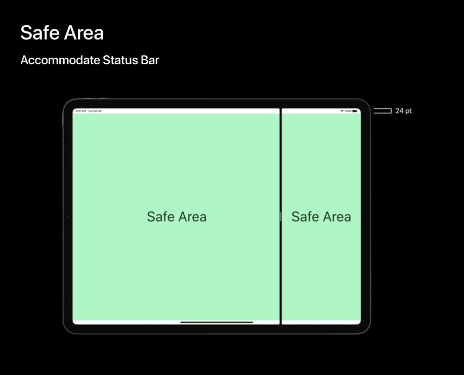
特别提示，在 Slide Over 模式中，app 的安全区域完全充满 app 的可显示区域，安全区域到顶部和底部的距离均为 0pt。
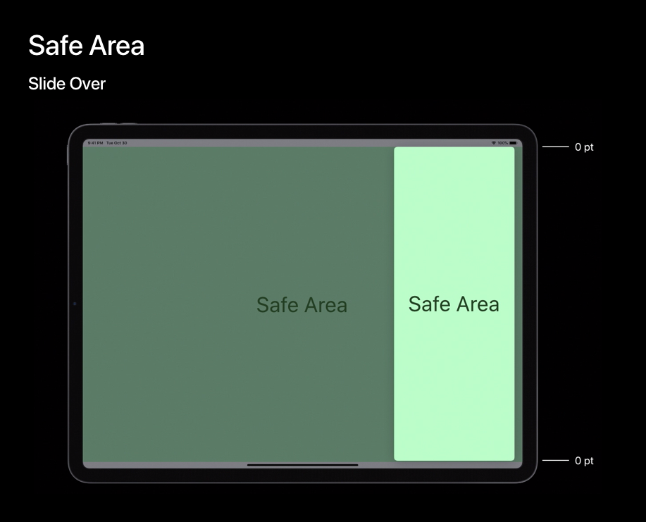
在界面中有 Navigation Bar、Tab Bar 或者 Tool Bar 时，不管屏幕方向是横向还是纵向，安全区域到左右两侧的距离均为 0pt。这不同于 iPhone Xs，在横向屏幕时，因为刘海的缘故，需要在左右两侧留出对称相等的安全距离。
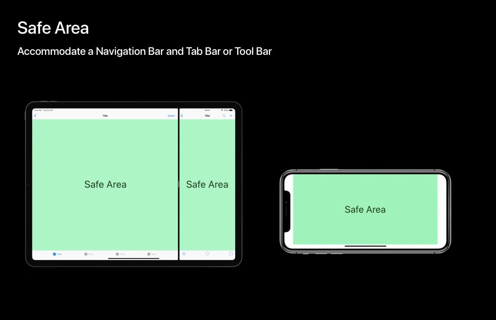
使用布局边界（Layout Margins）从屏幕左端到屏幕右端插入内容。
布局边界在内容之间、屏幕的左右边缘提供了可以呼吸的空间，也有利于内容与 Status Bar、Navigation Bar、Tab Bar、Status Bar 上的内容相对齐。同时布局边界也使得内容不会滚动到屏幕边缘的圆角中去。
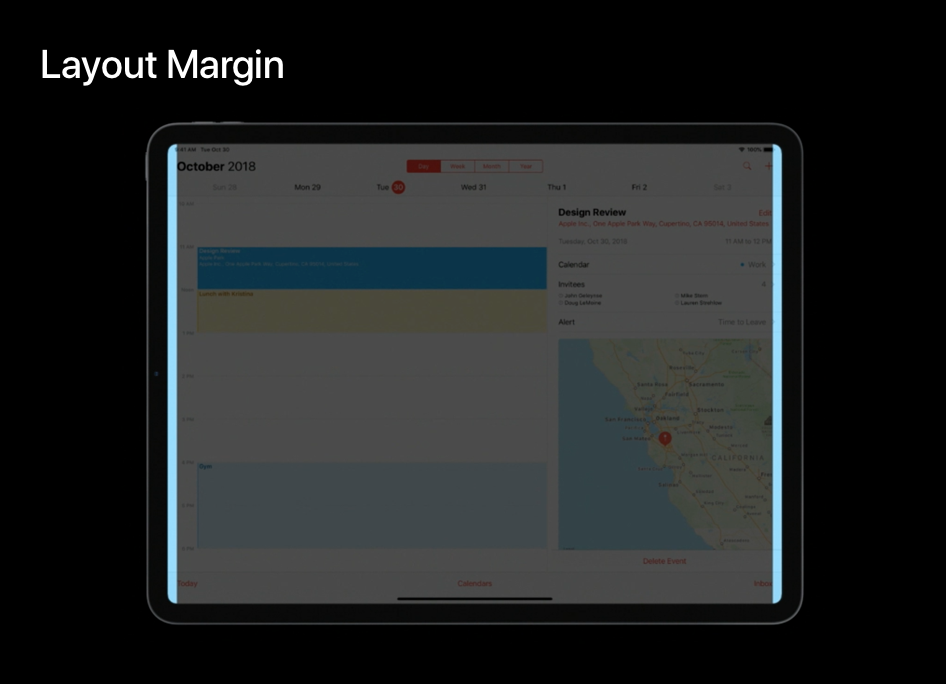
布局边界的宽度是由设备的 Size Class 来决定的。在 Regular 普通模式（如iPad Pro 11″ 横屏模式）下，布局边界的宽度是 20pt；在 Compact 紧凑模式（如 iPhone Xs 竖屏模式）下，布局边界的宽度是 16pt。有关于 Size Class 的更多细节可以阅读我的另一篇文章：尺寸级别和核心要素 Size Classes and Core Components - WWDC 2017 Session 812
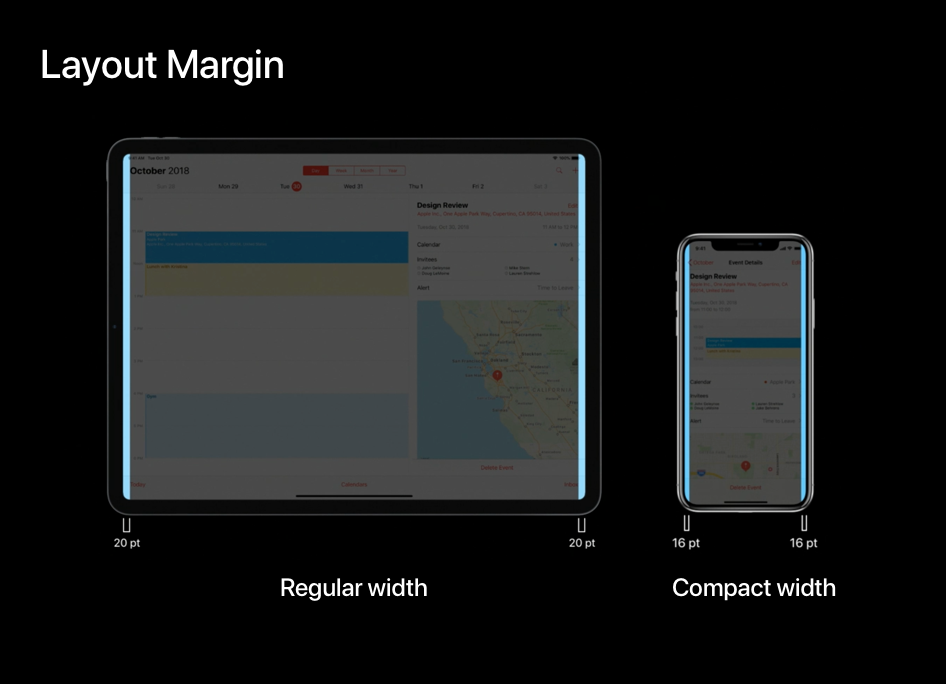
要考虑到多种不同的屏幕比率。
所有之前的 iPad 的屏幕比率是 4:3，iPad Pro 11″ 有着更宽的屏幕比率。
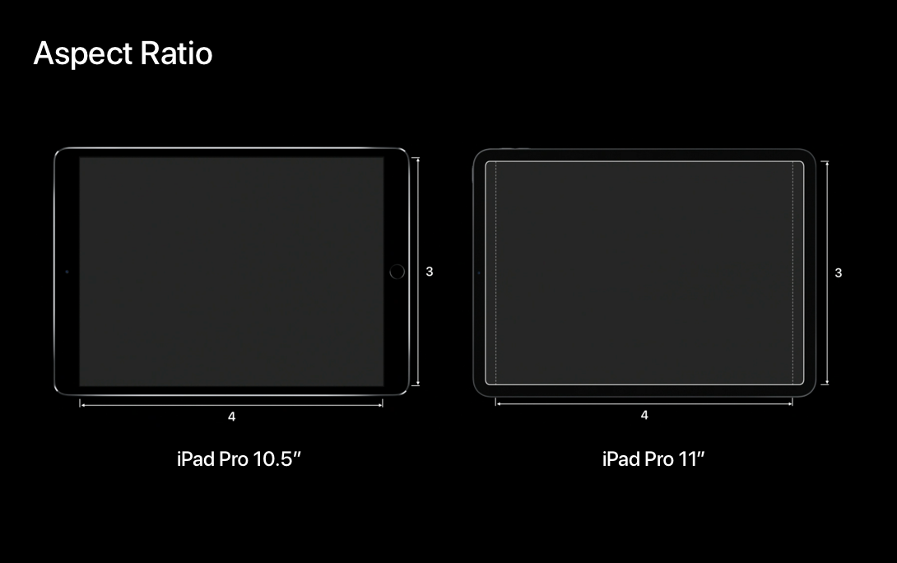
例如，一个游戏只为 4:3 比率而设计，那么在横屏模式下的 iPad Pro 11″ 上显示时，左右两侧就会出现黑条，或者当 app 充满屏幕显示时，上下两侧的内容就会被切掉。所以要特别注意那些独立的界面元素的位置和大小。
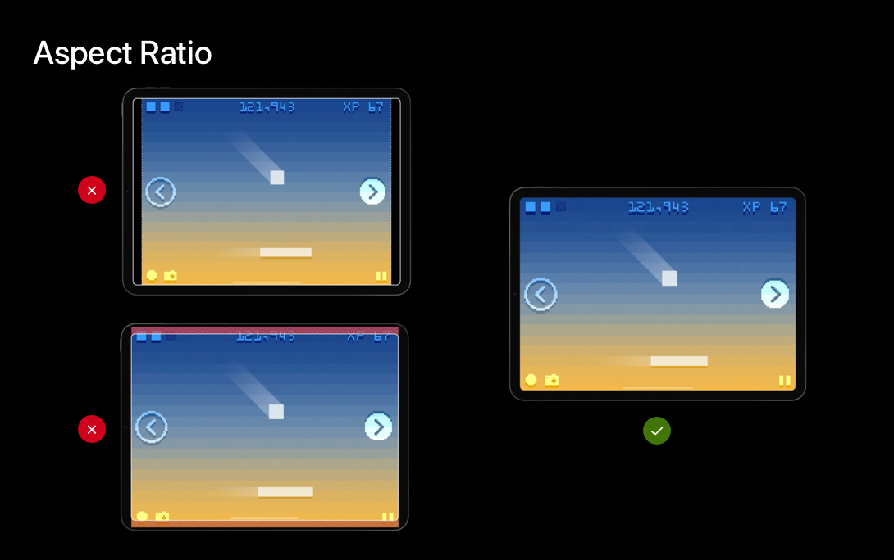
Compatibility Mode—App 没有适配会如何显示？
不同于 iPhone Xs、iPhone Xs Max 在屏幕尺寸发生变化时基本上只需要考虑竖屏和横屏两种情况，iPad Pro 在屏幕尺寸发生变化时不仅需要考虑 app 全屏时在竖屏和横屏的适配显示方式，还需要考虑 app 在 Slide Over、Spit View 模式下的适配显示方式。
以下主要以 iPad Pro 11″ 为例说明在各种不同的情况下，未适配的 app 会如何在新款 iPad Pro 上显示。请注意，探究 app 最后的显示结果是次要的，重要的是为什么 app 会那样显示，以此来深入了解、思考当硬件屏幕尺寸发生变化时，原有的 app 如何兼容、新的 app 如何与旧的 app 共存？进一步可展望未来新硬件设备尺寸的可能性和兼容旧 app 的大原则、大方向。
图例说明
- 蓝色表示已经适配了新 iPad Pro 的应用的实际显示区域，红色表示已经适配了新 iPad Pro 的另一个应用的实际显示区域（如有）。
- 黄色表示未适配新 iPad Pro 的应用的实际显示区域，绿色表示未适配新 iPad Pro 的另一个应用的实际显示区域（如有）。
- 黑色表示 app 运行时不能被利用的区域，通常会显示状态栏 Status Bar、Home Indicator 或黑边等。
- 为了更好地区分屏幕边框和屏幕显示区域，特将示意图中的 iPad 黑色边框修改为了白色。
- 以下示意图中的尺寸、比例虽与实际情况接近，但不足够精确，仅供参考。
在分不同的情况观察未适配的 app 如何显示之前，需要先将 iPad 上的 app 分为三类。发布在 App Store 中的 app 有的是专门为 iPad 设计的，有的并没有，只为 iPhone 进行了设计，但可以下载运行在 iPad 上。而专门为 iPad 设计的这类应用中，一部分应用支持 Split View、Slide Over 功能，常见的如「微信」、「微博」，这类 app 因为支持这种功能所以其布局会根据屏幕分配的显示区域大小动态变化；另一部分应用则不支持 Split View、Slide Over 功能（这类 app 在 Info.plist 文件中将 UIRequiresFullScreen 属性设置为了 YES），常见的如「腾讯视频」、「淘宝」、大部分游戏，它们不支持这种功能因此 app 的布局是固定的。因此分出的三类分别是：
- 专门为 iPad 而设计但不支持 Split View、Slide Over 功能的 app；
- 专门为 iPad 而设计且支持 Split View、Slide Over 功能的 app；
- 只为 iPhone 而设计但可以运行在 iPad 上的 app。
这三类重点来关注前两类。
全屏显示
已经适配全新 iPad Pro 的 app 的显示区域自然可以完全充满屏幕。在屏幕的顶端一般会显示状态栏 Status Bar，底部一般会显示 Home Indicator。
对于一个未适配的 app来说，其在开发时，圆角屏幕和 Home Indicator 是不存在的。所以当显示在全新的 iPad Pro 上时，必须要留出空间。在横屏模式下的 iPad Pro 11″ 上，一个未适配且不支持 Split View 功能的 app 由于其布局尺寸是固定的，所以其必须保持 4:3 的显示比例，又需要在顶部为 Status Bar 和在底部为 Home Indicator 留出空间，综上其显示时上、下、左、右都是有黑边的。而对于一个未适配但支持 Split View 功能的 app 由于可以自动调整布局尺寸，所以其显示比例是灵活的。只需要为 Status Bar 和 Home Indicator 留出空间，即只有上、下有黑边。
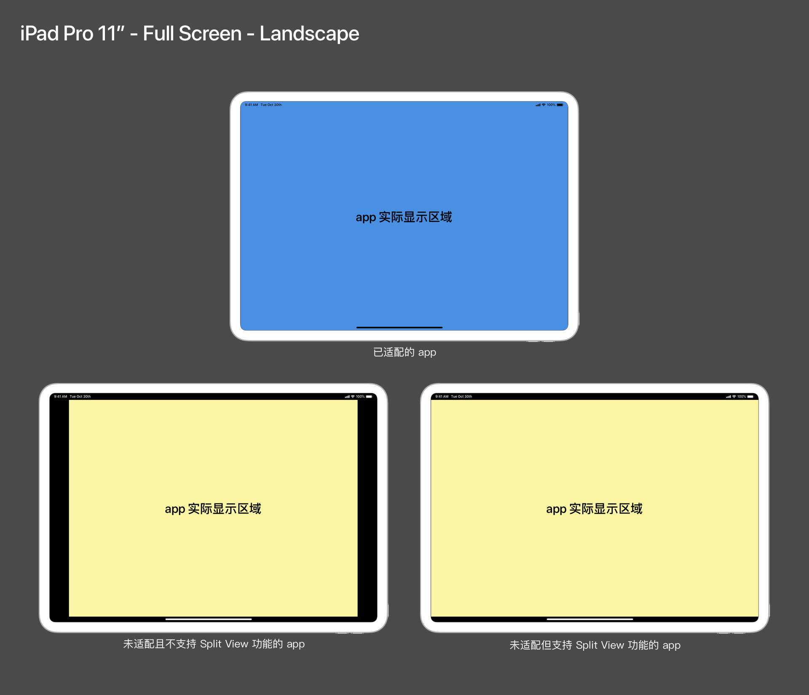
同理，在竖屏模式下的 iPad Pro 11″ 上，一个未适配且不支持 Split View 功能的 app 显示比例仍旧保持 4:3，其实际显示区域和 iPad Pro 10.5″ 是一样的，但在上、下留有黑边。而对于一个未适配但支持 Split View 功能的 app 由于比例灵活，其实际显示区域大于 iPad Pro 10.5″，上、下的黑边比前述情况更小一些。
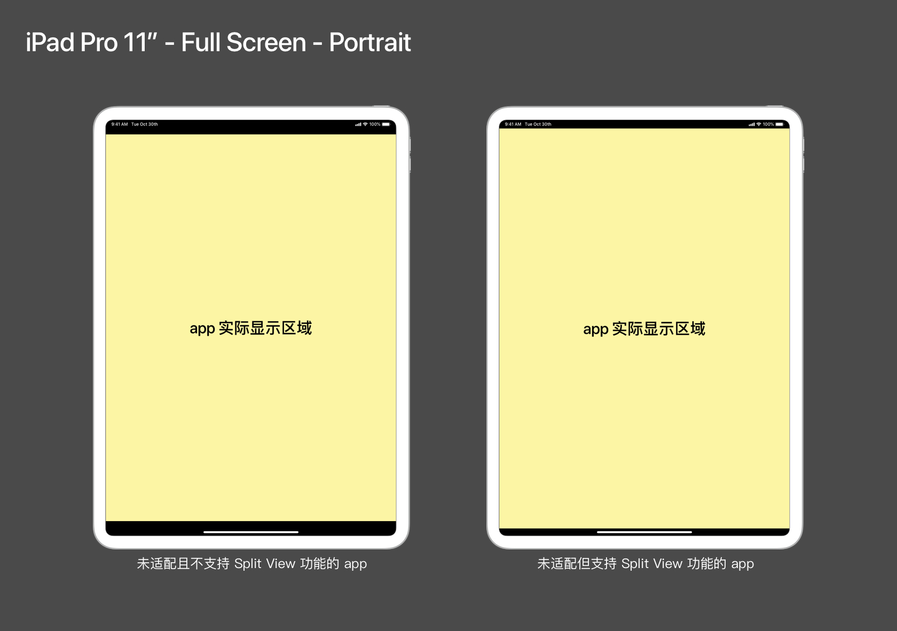
iPad Pro 12.9″ 与前两代屏幕分辨率完全相同，于是很多人想当然的认为 app 就有什么需要适配的。然而由于圆角屏幕和 Home Indicator 的引入，app 仍然需要做一些适配工作。
在横屏模式下的 iPad Pro 12.9″ 上，一个未适配且不支持 Split View 功能的 app，显示时保持比例 4:3，其上、下、左、右均有黑边，但相比同情况下的 iPad Pro 11″，左右两侧的黑边宽度看上去更小一些。在竖屏模式下的 iPad Pro 12.9″ 上，一个未适配且不支持 Split View 功能的 app 由于要保持 4:3 的显示比例且上、下需要留出空间，所以其左、右两侧会空出，即其上、下、左、右均有黑边。
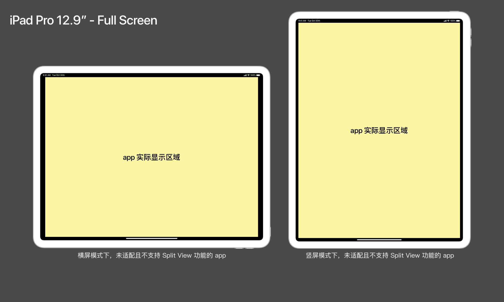
虽然现在已经是 iPad Pro 11″ 和 iPad Pro 12.9″（第三代）的时代了，iPad Pro 10.5″ 已经成为了历史。但仍旧有许多 app 没有适配 iPad Pro 10.5″ 和 iPad Pro 12.9″，只适配了 iPad 9.7″。这种应用在 iPad Pro 11″ 和 iPad Pro 12.9″ 上显示时不仅会出现上述的黑边情况，还会在 iPad 9.7″ 基础上直接放大到对应尺寸，由此造成的结果就是 app 显示看上去有点糊或者说字号看上去都很大或者说 app 显示的内容比正常情况少。
Split View
在 Split View 显示模式下，两个 app 可以以 1:1 或者 2:1 的方式并排显示，实现多任务处理。两个已经适配全新 iPad Pro 的 app 进行 Split View 时，app 均能充满其分配的显示区域。在屏幕的顶端一般会显示状态栏 Status Bar，底部一般会显示 Home Indicator，两个 app 之间会显示控制 app 显示方式的控制条。
在此指出 iOS 12 和新设备引入的两个小变化：
- 自 iOS 12 开始，Apple 取消了在竖屏模式下的 1/2 Split View 这种显示模式，猜测可能是因为在此模式下两个 app 的显示宽度比较窄，功能使用比较受限，所以被取消。当处于横屏下 1/2 Split View 显示模式时，此时将设备竖屏会自动切换到 1/3 Split View 显示模式。
- 由于 iPad Pro 11″ 的宽度（横屏模式下）比上一代进一步增加，所以在横屏下的 1/3 Split View 显示模式时，较窄的 app 的宽度由 320pt（iPhone SE、iPhone 4s 相同宽度） 增加到了 375pt（iPhone 8、iPhone Xs 相同宽度），与 iPad Pro 12.9″ 同样情况下的宽度相等。
不管是横屏还是竖屏，未适配的 app 在显示时需要为 Status Bar 和 Home Indicator 留出空间，所以在 1/2 Split View 和 1/3 Split View 时上、下均有黑边。
特别注意的是，若一个已适配的 app 和另一个没有适配的 app 进行 Split View 时，两个 app 都会被当做没有适配，即上、下有黑边，以此作兼容性处理。
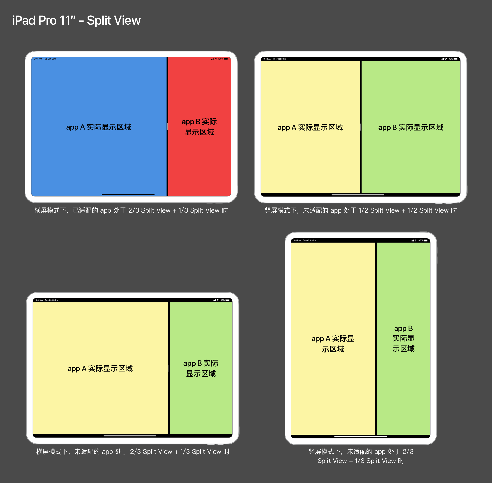
Slide Over
在 Slide Over 显示模式下，一个全屏显示的 app 或者两个进行 Split View 的 app 之外，可以打开另一个 app 附在其他 app 之上进行操作，不需要时可以滑出屏幕隐藏，继续在之前的 app 上操作。这个功能对于需要临时查看、参考的 app 很有用。已经适配全新 iPad Pro 的 app 进行 Slide Over 时，app 可以充满其分配的显示区域，并浮在其他 app 之上，上、下、右都会留出一个 Status Bar 的高度/宽度（24pt）。
同样的，由于 iPad Pro 11″ 的宽度（横屏模式下）的增加，横屏下进行 Slide Over 的 app 的宽度也由 320pt（iPhone SE、iPhone 4s 相同宽度） 增加到了 375pt（iPhone 8、iPhone Xs 相同宽度），与 iPad Pro 12.9″ 同样情况下的宽度相等。
不管是横屏还是竖屏，未适配的 app 在进行 Slide Over 时，app 均可以充满被分配的显示区域。但在实际情况下，与已适配的 app 对比，还是可能会有一些细节上的不同。例如，Tab Bar/Tool Bar 的高度在未适配的 app 中是 50pt，而在已适配的 app 中是 70pt，增加的 20pt 即是 Home Indicator 的高度。
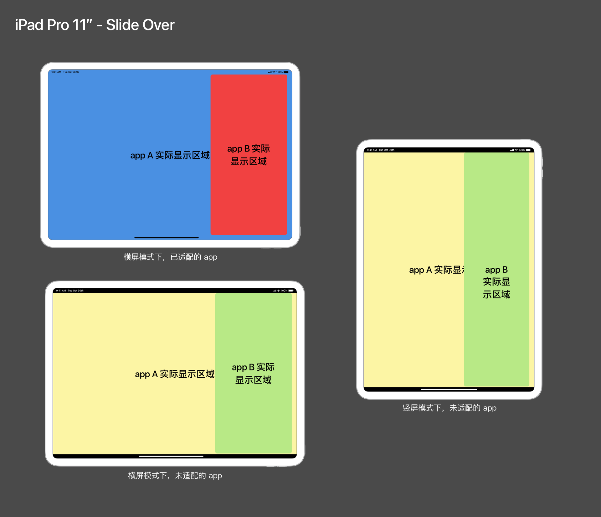
只为 iPhone 而设计的 app
在 iOS 12 之前，那些只为 iPhone 而设计的 app 运行在 iPad 上时，会以 iPhone 4s 的屏幕尺寸 320pt × 480pt 显示，可以等比例放大显示。可想而知，在如今这个大屏时代，其显示效果真是又窄又矮。
在 iOS 12 中，Apple 终于更改了这个显示尺寸，这样的 app 会以 iPhone 8 的屏幕尺寸 375pt × 667pt 显示，可以等比例放大显示。自然的，无论放大与否，app 的四周均有黑边，毕竟这些 app 不是为 iPad 而设计的。
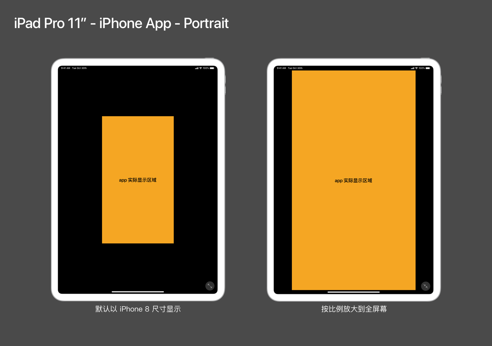
总结
从各种情况的不适配 app 的显示结果来看，全新 iPad Pro 对原有 app 的兼容显示原则并不像从 iPhone 7 → iPhone X 时那样简单明了，app 的显示尺寸也不一定是与老设备的显示尺寸完全一致，需要考虑 iPad 特有的多种不同的显示模式、屏幕方向、app 显示比例的变化、新的屏幕元素（圆角和 Home Indicator ）的引入、已适配 app 和未适配 app 的共存等诸多因素，综合这些来确定一个合适的最终方案。
从发布 iPhone Xs Max 之后来看，由于 iPhone Xs Max 上的 app 显示时会直接放大 iPhone X 版本的 app 到全屏，不存在黑边，看上去问题没有那么严重，因此 app 的开发者/开发厂商对于适配 iPhone Xs Max 的积极性并不高或者说推进速度并不块，例如「微信」在 iPhone Xs Max 发布今近两月后仍没有适配。而对于全新的 iPad Pro 来说，iPad 的 app 市场远小于 iPhone app 市场，许多厂商在考虑缩减成本的情况下，将 iPad 版本直接做成了 iPhone 版本的放大版甚至完全停止更新或取消 iPad 版本。这是一个不好的信号，可想而知，全新 iPad Pro 的 app 的适配推进速度也不会很快。
Apple 肯定也意识到了 iPad app 生态的这些问题，这两年更加坚定和清晰地将 iPad 分为了高低端两档产品，低端维持原有的娱乐属性，高端大幅向提高生产力、创造力方向改进，并从近期和远期推出两项改进计划：
- 近期：Apple 已经发出通知，自 2019 年 3 月开始，所有更新提交的 app 或新上架的 app 都需要使用 Xcode 10.1/iOS 12.1 SDK 或以上版本来编译，即需要更新适配最新的 iPhone、iPad 机型。
- 远期：Apple 在 WWDC 2018 上宣布，从 2019 年晚些时候开始，iOS 平台上的 app 可以通过 UIKit 等底层框架的适配和调整直接借鉴到 macOS app 中去，以减少分别开发两个平台 app 的成本。macOS 10.14 中的「Stocks 股市」、「News 新闻」、「Voice Memos 语音备忘录」、「Home 家庭」app 即是这项技术的一个示例。
希望随着 Apple 对 iPad 的定位更加清晰，可以吸引更多的生产力、创造力 app 开发者入场，使得 iPad app 市场死灰复燃，真正可以说出「用 iPad Pro 取代电脑」这句话。那时的 iPad Pro 和电脑市场到底会是怎样的呢？值得期待。
适配常见问题
示例一：由自定义 Tab Bar 引出的问题
- 下面这个 app 在 iPad Pro 10.5″ 上运行时没有任何问题，但在 iPad Pro 11″ 上运行时，底部的 Tab Bar 会和 Home Indicator 重叠在一起。
- 造成这个问题的一个原因是底部的 Tab Bar 看上去是标准的 Tab Bar，但实际上是自定义的 Tab Bar，并没有服从 Safe Area 的布局规范；另一个可能的原因是 app 在开发时并没有使用 Storyboard 而是通过 API 去定义了屏幕边界。
- 解决这个问题的方法很简单：在开发时使用 Storyboard 以及符合 Safe Area 的布局规范，以及尽可能地使用原生的 UI 控件。
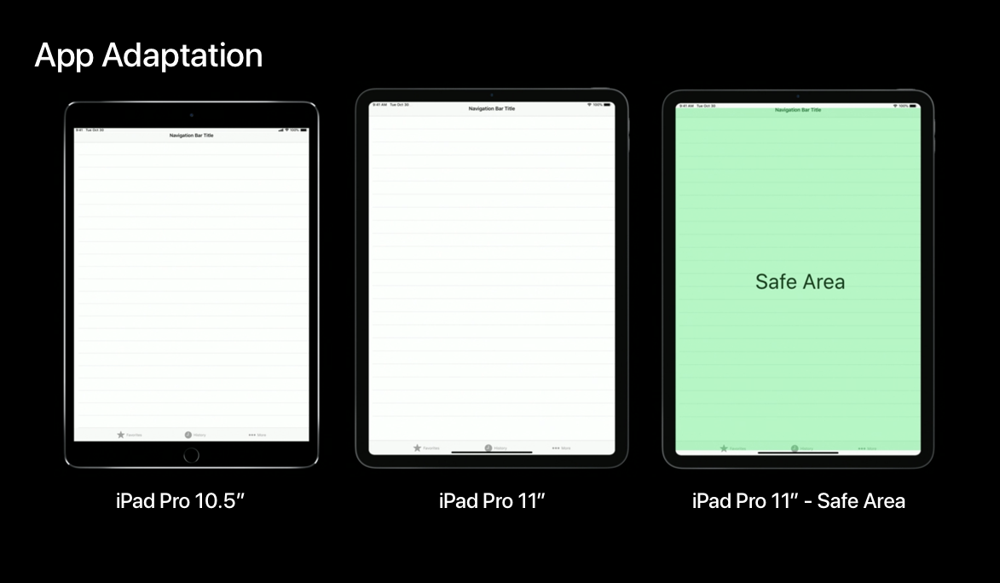
示例二：完全自定义 UI 的全屏游戏
- 下面这个 app 是完全自定义 UI 元素的一个全屏游戏，在 iPad Pro 10.5″ 上运行也没有任何问题，但运行在 iPad Pro 11″ 上会发现，上部和顶部的元素被切掉了，而且四个角落里的按钮离屏幕圆角太近了以致于不能完全显示出来。
- 造成这个问题的一个原因是游戏 app 在开发时假设了屏幕的比率固定为 4:3，然而这对于 iPad Pro 11″ 来说并不再符合。
- 需要在设计时就考虑到可变的屏幕比率，特别注意新的 iPad 的四个圆角。并且在开发时使用 Safe Area 布局规范，不要让按钮和控件超出安全区域。特别在游戏中，要注意游戏的手势或控件要远离 Home Indicator。
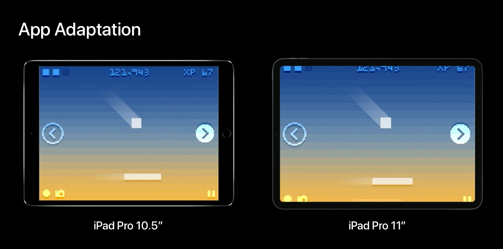
Apple Pencil 新功能的设计原则

- 第二代 Apple Pencil 在笔身上增加了一个双击手势。用户可以在系统设置中为双击手势选定一个固定操作，这也给用户在使用各个 app 时提供了连贯一致的、可预测的使用体验。用户可以在以下几种选项中选择双击手势的操作：
- 在当前选择的工具和橡皮擦之间切换；
- 在当前选择的工具和上次使用的工具之间切换；
- 展示一个调色板；
- 关闭双击手势功能。

为了在 app 中提供不同功能的 Apple Pencil 双击操作手势，你需要遵守下面几个原则：
如果在系统设置中用户关闭了双击操作手势，app 就不应该响应用户在 Apple Pencil 上的双击操作手势。

在任何可能的时候，都要遵守系统的设置。在你的 app 中如果存在多种不同的笔功能、橡皮擦功能、调色板功能，但却并没有遵守双击操作手势对应功能的系统设置，这种不一致、不连贯的操作会让你的 app 变得不直观，特别是在配合其他支持 Apple Pencil 的 app 进行多任务操作时尤为明显。

如果在你的 app 中，需要针对双击手势提供不同于系统设置中的功能，确保让这个自定义的行为默认保持关闭。在用户明确需要的时候，由用户主动开启，以让 app 中的自定义功能覆盖系统层级中设定的功能。这样也防止了用户在使用你的 app 时发现其行为与其他 app 不一致。

如果你的 app 支持 Apple Pencil，但并不支持或不完全支持在系统设置中提到的几个双击手势功能，你可以尽可能地将相似含义的功能映射到 Apple Pencil 的双击手势上，以保持连贯一致。例如在一个照片类 app 中，Apple Pencil 的双击手势可以在两种不同的滤镜模式中切换。不要让 Apple Pencil 的双击手势执行直接修改内容的操作以防止出现严重的操作失误，因为双击手势这个操作很容易误操作。
不管 Apple Pencil 的双击手势在你的 app 中对应什么操作，确保总是给用户提供有关于 Apple Pencil 双击后发生了什么的清晰、及时的视觉反馈，这样用户可以及时感知到 app 的行为发生了变化，如果是误操作可以及时恢复。
要向第一代、第二代 Apple Pencil 的用户都提供一份绝佳的使用体验。Apple Pencil 双击手势所提供的功能应该是用户在 app 中某个功能的快捷方式，而不是在 app 的界面中找不到的功能。
Read More
Apple 官方
- Adaptivity and Layout - Visual Design - iOS - Human Interface Guidelines - Apple Developer
- Image Size and Resolution - Icons and Images - iOS - Human Interface Guidelines - Apple Developer
- Launch Screen - Icons and Images - iOS - Human Interface Guidelines - Apple Developer
- Multitasking - System Capabilities - iOS - Human Interface Guidelines - Apple Developer
- Developing iPad Apps - Apple Developer
- Designing for iPad Pro and Apple Pencil - Tech Talks - Videos - Apple Developer
- Bringing Your Apps to the New iPad Pro - Tech Talks - Videos - Apple Developer
非官方
如果你觉得这篇文章对你有所帮助，欢迎请我喝杯咖啡，感谢你的支持😁